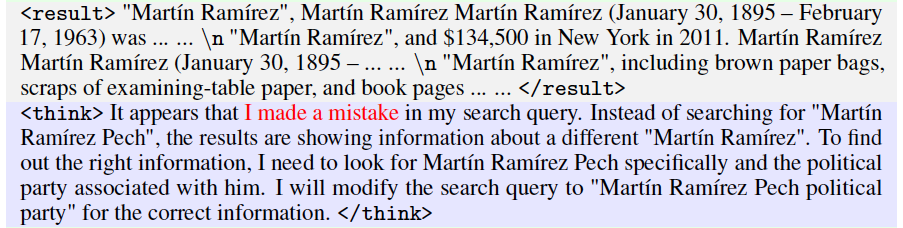
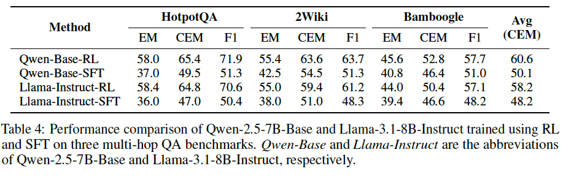
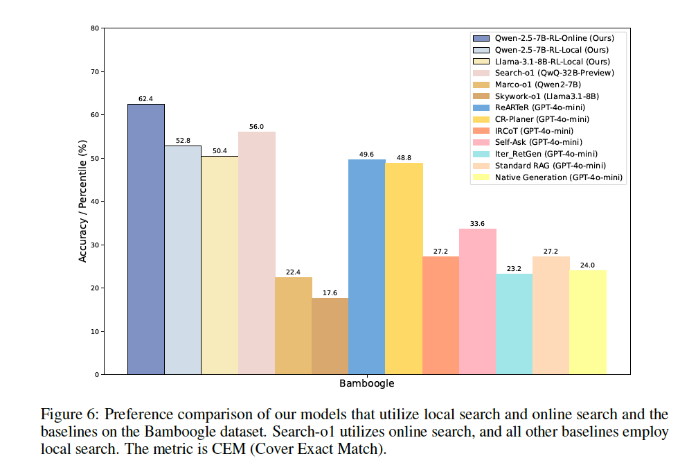

How Reinforcement Learning Unlocks LLM Agents Capabilities
In recent years, large language models (LLMs) have demonstrated remarkable capabilities across various domains. However, their ability to perform search tasks effectively has been a significant challenge. This blog explores how reinforcement learning (RL) is being leveraged to enhance LLMs' search capabilities, focusing on three key papers: WebGPT, ReSearch, and R1-Searcher.
The Challenge of Search in LLMs
Traditional LLMs struggle with search tasks for several reasons:
- They rely on static knowledge from their training data
- They lack the ability to dynamically explore and gather information
- They often hallucinate or provide incomplete information when knowledge is missing
Reinforcement learning offers a promising solution by enabling LLMs to learn optimal search strategies through trial and error, guided by carefully designed reward functions.
WebGPT: Pioneering RL for Search
WebGPT, developed by OpenAI, was one of the first models to use reinforcement learning to enhance search capabilities. The model was trained to browse the web, find relevant information, and compose detailed answers to questions.

The key innovations in WebGPT include:
- RL from Human Feedback (RLHF): Using human preferences to train a reward model
- Web Browsing Environment: Creating a simulated environment where the model can search and navigate web pages
- Iterative Training: Gradually improving search strategies through multiple rounds of feedback
WebGPT demonstrated that RL could significantly improve an LLM's ability to search for and synthesize information from the web, setting the foundation for future research in this area.
ReSearch: Enhancing Search with Self-Reflection
Building on WebGPT's foundation, ReSearch introduced a novel approach that incorporates self-reflection into the search process. This model was designed to iteratively refine its search strategy based on the results of previous searches.
The ReSearch architecture includes:
- Self-Reflection Mechanism: Evaluating the quality and relevance of search results
- Multi-Step Reasoning: Breaking down complex queries into manageable sub-queries
- Adaptive Search Strategy: Modifying search approaches based on intermediate results
What makes ReSearch particularly interesting is its use of reinforcement learning to optimize the self-reflection process itself. The model learns not just how to search, but how to evaluate and improve its own search strategies.
R1-Searcher: Optimizing Search Queries
The most recent advancement in this field is R1-Searcher, which focuses specifically on optimizing the formulation of search queries. This model uses reinforcement learning to generate effective search queries that maximize the retrieval of relevant information.
R1-Searcher introduces several innovations:
- Query Optimization: Learning to generate queries that yield high-quality search results
- Context-Aware Searching: Adapting search strategies based on the specific context and domain
- Reward Shaping: Using sophisticated reward functions that consider both relevance and diversity of results
The reinforcement learning approach in R1-Searcher is particularly noteworthy for its use of a specialized reward function that balances exploration (finding diverse information) and exploitation (focusing on highly relevant results).
Comparative Analysis
When comparing these three approaches, we can observe a clear evolution in how reinforcement learning is applied to enhance search capabilities in LLMs:
- WebGPT established the foundation by using RL to train models to navigate and extract information from the web
- ReSearch built upon this by adding self-reflection mechanisms to iteratively improve search strategies
- R1-Searcher focused specifically on optimizing the query formulation process
Each approach has its strengths and limitations, but together they demonstrate the significant potential of reinforcement learning in enhancing LLMs' search capabilities.
Conclusion
This blog focuses primarily on sharing the latest architectures adopted by large language models (LLMs) when performing search tasks. Future posts will introduce even newer architectures. Although the architectures are becoming increasingly sophisticated, the underlying reinforcement learning algorithm remains GRPO; however, the innovative designs in reward functions deserve special attention. In subsequent blogs, we will specifically concentrate on discussing these reward function innovations.
On one hand, we observe clear performance gains driven by architectural changes. On the other hand, I believe the detailed RL insights presented in these papers are even more crucial. From these examples, it's evident that reinforcement learning is highly effective in guiding models to autonomously explore optimal search strategies. Undoubtedly, this is a promising research direction, and we will continue to closely follow its developments.